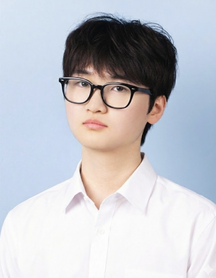
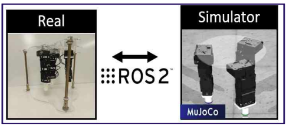

Songwoo Kim
Welcome! I am a researcher at Human Assistive Neuro(HAN) Lab, Yonsei University. My research interests include optimization, robot path planning, robot modeling, and control.
Google Scholar ResearchGate GitHub
E-mail: swkim@yonsei.ac.kr


세 손가락 로봇 매니퓰레이터 임피던스 제어를 통한 변형 가능 물체 파지
김송우, 정호진, 윤한얼
한국지능시스템학회 논문지 (JKIIS), Jun. 2025
실외 환경에서 Eye-in-Hand 로봇 매니퓰레이터의 Pose-based Visual Servoing 수행을 위한 강화학습 기반 방법론
이정우, 김송우, 정호진, 윤한얼
한국지능시스템학회 논문지 (JKIIS), Apr. 2025
A Twin Dual-Arm Robot Testbed to Collect the Human Demonstration Data for Imitation Learning
J. H. Kim, S. W. Heo, S. W. Kim, H. J. Jung, H. U. Yoon
International Conference on Soft Computing and Intelligent Systems and International Symposium on Advanced Intelligent Systems (SCIS-ISIS), Nov. 2024
세 손가락 로봇 매니퓰레이터 임피던스 제어를 통한 변형 가능 물체 파지
김송우, 정호진, 윤한얼
한국지능시스템학회 (KIIS), Nov. 2024
🏆 우수논문상
동적 장애물 회피를 위한 Multiplicative Value Function 기반 로봇 매니퓰레이터 플래닝
김송우, 박찬진, 이정우, 현승민, 정호진, 윤한얼
한국지능시스템학회 (KIIS), Apr. 2024
2023
Yonsei University, Wonju